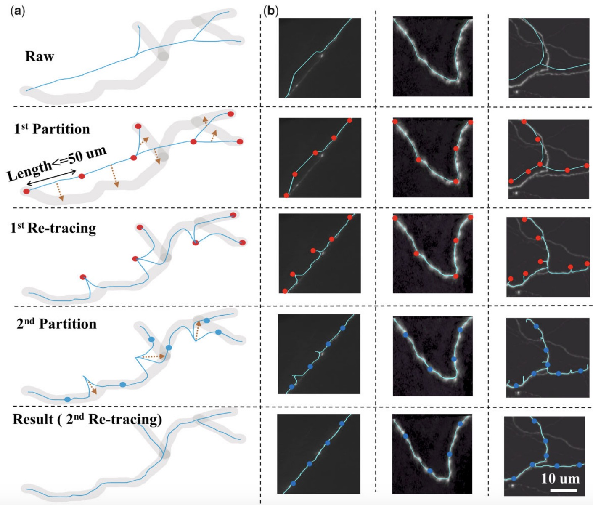

|
Yiwei Li - 李轶为
I am a second-year Ph.D. student at the University of Georgia, under the mentorship of Prof. Tianming Liu. I graduated with a Bachelor's degree in Information Engineering from the Chien-Shiung Wu College at Southeast University (2016-2020). I then completed my Master's degree in the School of Computer Science at Southeast University (2020-2023), where I worked under the supervision of Prof. Hanchuan Peng with a focus on computational neuroscience. My research is centered around the exciting fields of AGI and Computational Neuroscience, with primary goal is to bridge the gap between AGI and the human brain, particularly in the context of multimodality, exploring the mechanisms behind human intelligence. I am also interested in AI4Med/AI4Sci and am currently a data scientist intern (remote) at CAMCA, Harvard Medical School. My specific areas of research include:
I am actively seeking a research internship starting in Summer 2025.
UGA /
Harvard
|
LinkedIn
|
Google Scholar
|
GitHub
|
CV
|
|
News
| 2025/1 - One paper accepted by ICLR 2025. |
| 2025/1 - One paper accepted by ICRA 2025. |
| 2024/12 - One paper accepted by ISBI 2025. |
| 2024/10 - One paper accepted by PLoS Global Health. |
| 2024/09 - One paper accepted by NeurIPS 2024. |
| 2024/05 - Starting my remote internship at Harvard Medical School, advised by Dr. Xiang Li. |
| 2024/04 - One paper accepted by MICCAI 2024. |
| 2023/08 - I joined the CAID lab at the University of Georgia as a research assistant. |
Selected Papers
Video Generation
|
|
ECHOPulse: ECG Controlled Echocardiograms Video Generation
Yiwei Li*, Sekeun Kim*, Zihao Wu, Hanqi Jiang, Yi Pan, Pengfei Jin, Sifan Song, Yucheng Shi, Xiaowei Yu, Tianze Yang, Tianming Liu, Quanzheng Li, Xiang Li.
(ICLR 2025), The Thirteenth International Conference on Learning Representations, 2025.
[Paper]
[code]
|
Neuron Reconstruction
|

|
NRRS: a re-tracing strategy to refine neuron reconstruction
Yiwei Li, Shengdian Jiang, Liya Ding, Lijuan Liu.
Bioimage informatics.
[Paper]
[code]
|
LLM agents
|
|
AD-AutoGPT: An Autonomous GPT for Alzheimer's Disease Infodemiology
Haixing Dai*, Yiwei Li*strong>, Zhengliang Liu, Lin Zhao, Zihao Wu, Suhang Song, Ye Shen, Dajiang Zhu, Xiang Li, Sheng Li, Xiaobai Yao, Lu Shi, Quanzheng Li, Zhuo Chen, Donglan Zhang, Gengchen Mai, Tianming Liu.
PLoS Public Health
[Paper]
[code]
|
Multimodality Alignment
|
|
Eye-gaze Guided Multi-modal Alignment for Medical Representation Learning
Chong Ma, Hanqi Jiang, Wenting Chen, Yiwei Li, Zihao Wu, Xiaowei Yu, Zhengliang Liu, Lei Guo, Dajiang Zhu, Tuo Zhang, Dinggang Shen, Tianming Liu, Xiang Li.
(NeurIPs), The Thirty-eighth Annual Conference on Neural Information Processing Systems, 2024.
[Paper]
[code]
|
Miscellaneous
Outside of research, I enjoy playing basketball and cooking. I also have an adorable cat called Rainbow.
|
{kind=link}